RioRio › Atividades › Atividade 5
Resumo da história do Rio · Atividade 5
Origem da cidade e a principal praça
Depois de transferida para o Morro do Castelo, como surgiu a nossa cidade? Qual foi a primeira área urbana do Rio? Qual foi a principal praça do período colonial? O Rio começou a crescer na beira do mar?
Leia o texto 1 abaixo, clique nas palavras destacadas e observe o mapa. Depois, clique no 2 e no 3, e faça o mesmo. Com certeza você responderá às questões apresentadas.
Primeiros caminhos
Fundada no Morro Cara de Cão, em 1565, nossa cidade passou a existir, de fato, em 1567, no alto do , que existiu no Centro do Rio, sendo demolido em 1922. A partir do Morro do Castelo, o Rio começou a crescer, transformando-se na metrópole que conhecemos hoje. Nessa região, havia mais três morros — , e — que demarcaram, com o Morro do Castelo, a área urbana mais antiga do Rio. A partir da primeira ladeira do Morro do Castelo, a da , formou-se, até o Morro do São Bento, um que, anos depois, se chamou . Nesse caminho, por volta de 1590, frades carmelitas se instalaram em uma pequena capela, .
Morros, igrejas e Largo do Carmo
No final do século XVI, muitas ordens religiosas católicas, com o apoio do reino português, começaram a se estabelecer no Brasil. No Rio não foi diferente. No , instalaram-se os , no , os , e nos morros de e da , os . Os carmelitas, que estavam na beira do mar, construíram, no lugar da antiga capela de Nossa Senhora do Ó, uma dedicados a Nossa Senhora do Carmo. Por volta de 1640, a cidade do alto do Morro do Castelo começou a se mudar para a várzea, transferindo a e o para um terreno junto à , de frente para o mar e o convento dos carmelitas, que se chamou .
Palácio e praça mais importantes
Em meados do século XVIII, a área entre os estava Em 1743, imagine, ergueram um palácio no antigo — a . Depois, em 1763, transformaram o Rio em capital do Brasil e do vice-reinado de Portugal, e o palácio tornou-se , sendo decidido que todo ouro que era levado do Brasil tinha que sair pelo porto do Rio! Nessa altura, o antigo Largo do Carmo ficou ainda mais movimentado, qualificando-se como a . Em 1808, com a chegada de Dom João, o célebre palácio virou e o antigo largo o de Portugal. Esse lugar hoje? Ele é a nossa
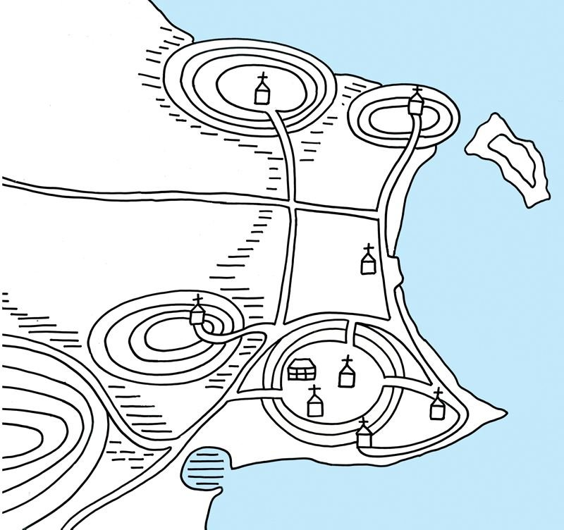
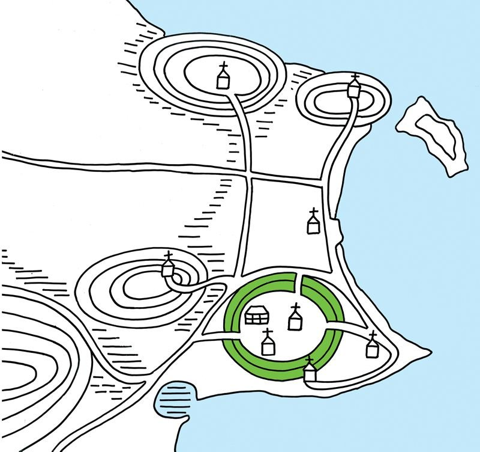
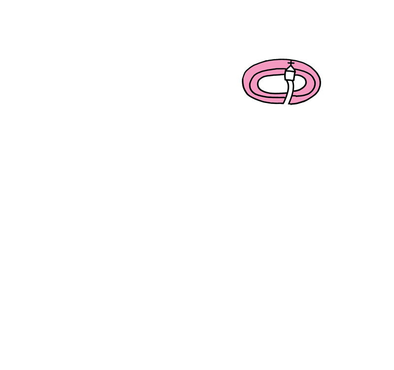
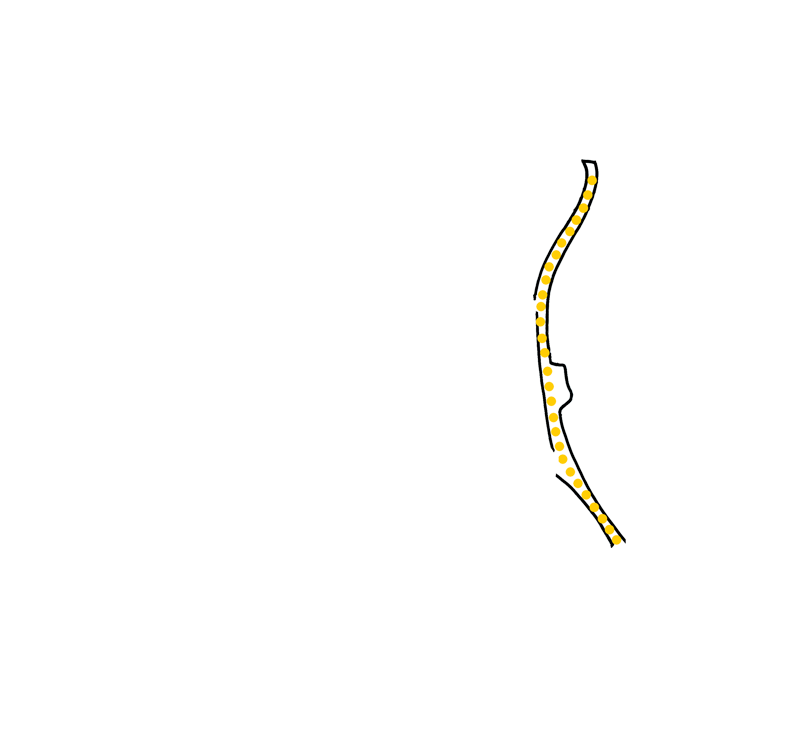
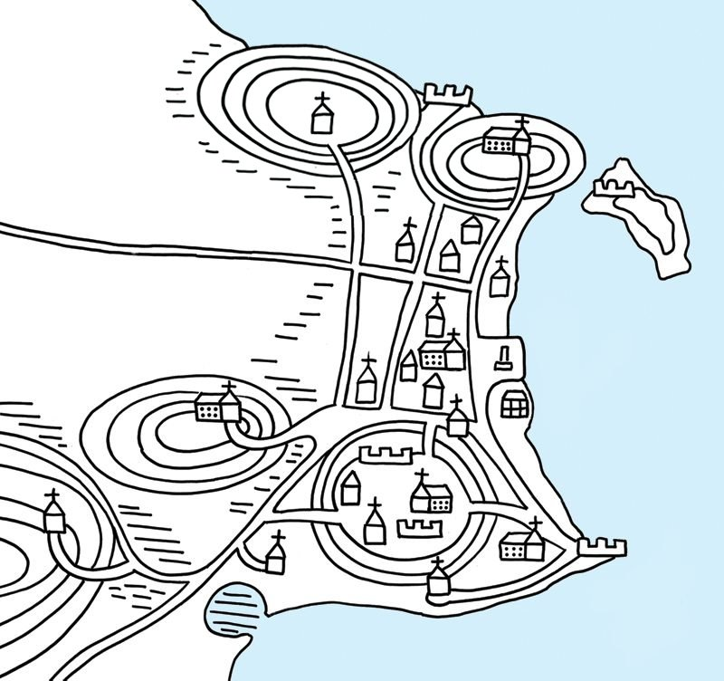
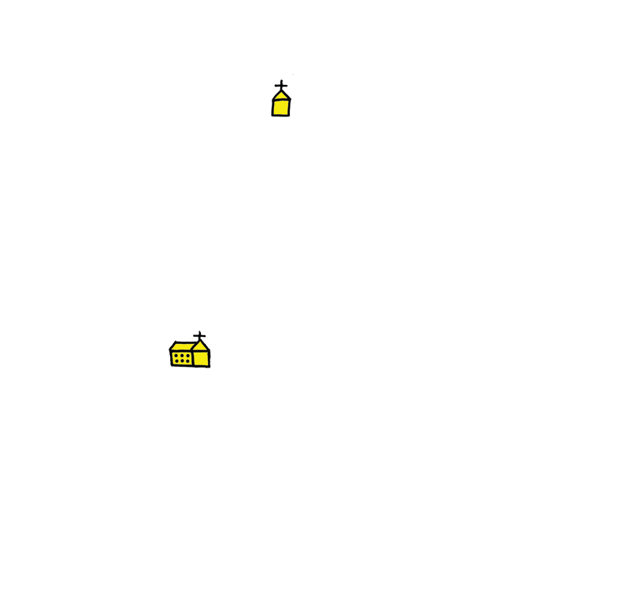
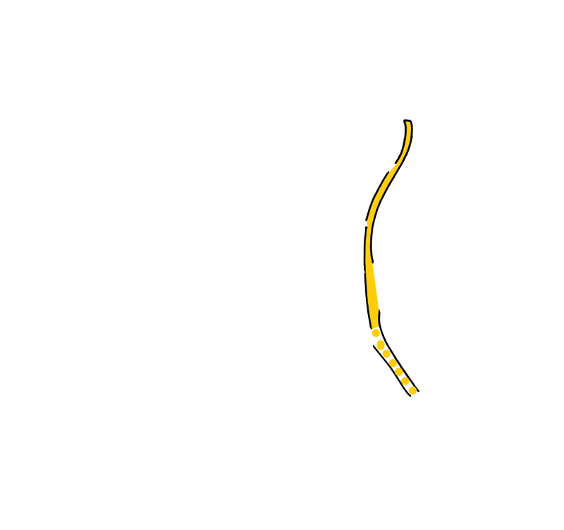
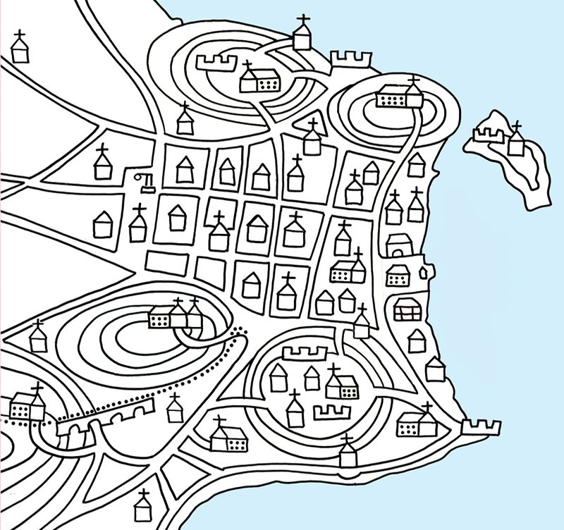
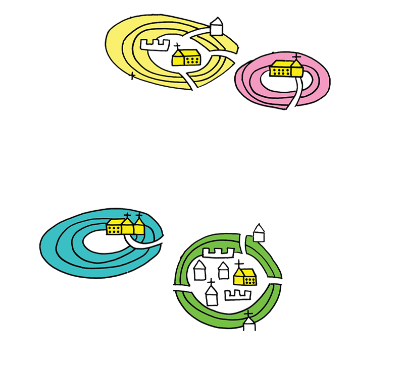
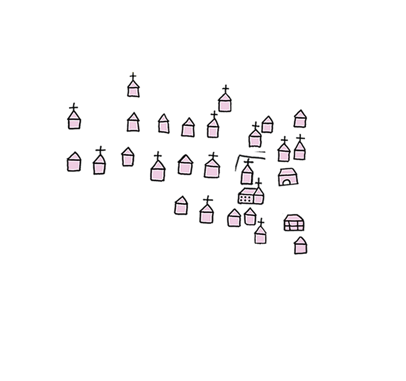
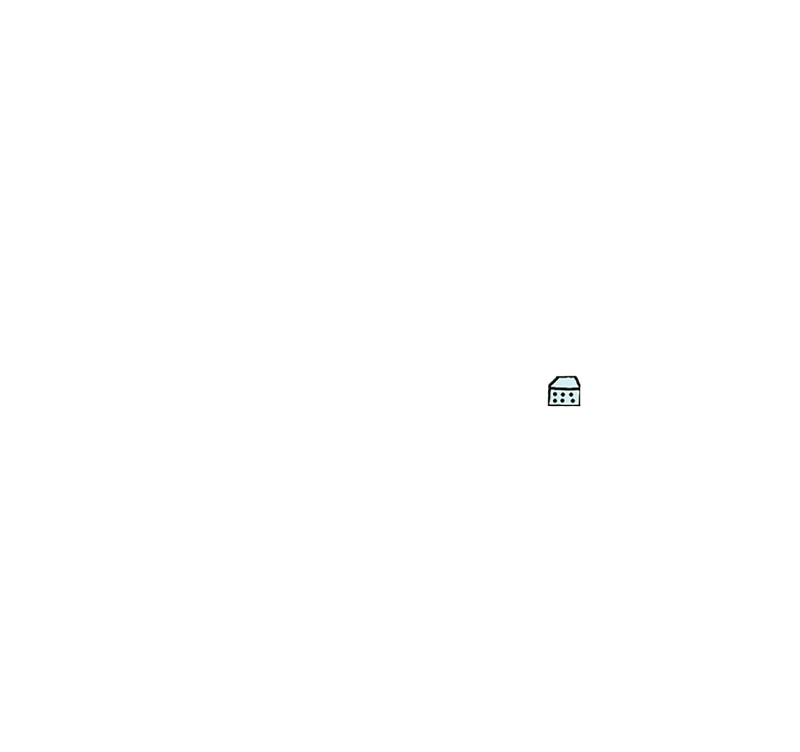